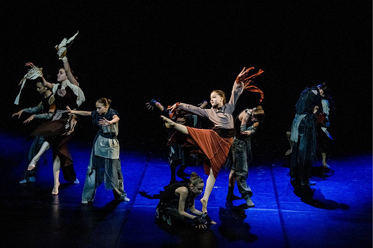
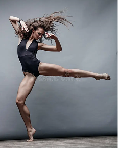
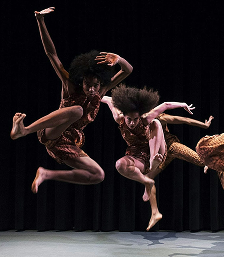
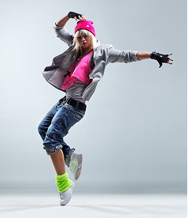
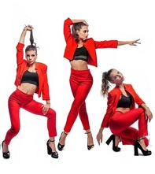

Вырази себя через движение!
Узнай всё про исскуство танца на нашем сайте!

Контемпорари (contemporary dance) — это современное направление танца, которое объединяет элементы классического балета, модерна и экспериментального движения. Его цель — самовыражение танцора через свободные, пластичные движения.
Афро-джаз(Afro-Jazz) — танцевальное направление, которое вобрало в себя основные хореографические элементы джаза и пластичные движения африканских народных танцев. Главное - эмоциональное наполнение и передача собственного настроения.
Хип-хоп танец (Hip-hop dance) — это уличный танцевальный стиль, сопровождаемый хип-хоп-музыкой. Он включает в себя широкий диапазон стилей, таких как брейк-данс, локинг, поппинг. В этом танцевальном стиле важна импровизация.
Вог(Vogue) — стиль танца, базирующийся на модельных позах и подиумной походке. Исполняется под музыку в стиле хаус. Отличительные особенности вога: быстрая техника движения руками, вычурная манерная походка, падения, вращения, обильное количество позировок, эмоциональная игра.
Контемпорари - Айседора Дункан. Когда-то молодую танцовщицу Айседору Дункан, отрицавшую классический балет, упрекали в отступлении от истинной танцевальной школы. Однако девушка не поступилась своими принципами. Она утверждала, что «нет такой позы, такого движения или жеста, которые были бы прекрасны сами по себе. Всякое движение будет только тогда прекрасным, когда оно правдиво и искренне выражает чувства и мысли. Фраза „красота линий“ сама по себе — абсурд. Линия только тогда красива, когда она направлена к прекрасной цели». Таким образом, Айседора положила начало танцу. Однако, несмотря на успехи Дункан, направление контемпорари начало развиваться лишь спустя более 30 лет после её смерти. В развитии поучаствовали и известные танцовщицы Мари Рамбер и Марта Грэм, хореографы Рудольф фон Лабан и Мерс Каннингем.
Афро-джаз - Кэтрин Данем. Первой начала использовать в своих хореографических постановках элементы африканских танцев Кэтрин Данем – знаменитая американская танцовщица. Именно благодаря ей «черный» танец перерос в настоящее сценическое искусство. Немало сделала для развития стиля и Перл Примус. Ее вклад – глубокая драматичность танца, основная особенность которого – широкие, затяжные прыжки. Танцовщица черпала вдохновение из книг темнокожих писателей Лэнгстона Хьюза и Льюиса Аллана. Отцом стиля можно назвать еще одного легендарного американского хореографа — Элвина Эйли, ученика небезызвестных Лестера Хортона и Марты Грехем.
Хип-Хоп танец - Лэнс Тейлор (псевдоним Afrika Bambaataa). В детстве был вовлечён в движение за освобождение чернокожего населения. Ленс Тейлор был членом банды Black Spades, где стал полководцем. Он, вдохновлённый фильмом "Зулусы", создал организацию Universal Zulu Nation. Затем, с 1977 года стал ведущим на хип-хоп вечеринках, а в 1982 году организовал первый хип-хоп тур за пределы США. Кроме того, он видел, что хип-хоп туры помогут продвигать ценности хип-хопа, которые, по его мнению, основаны на мире, единстве, любви, и весёлом времяпрепровождении. Он принёс мир в банды; многие артисты и члены банд говорят, что «хип-хоп спас много жизней».
Вог - Вилли Ниндзя. Этот танец пришёл к нам из Соединённых Штатов. Стиль получил своё начало в Гарлемской тюрьме. Она располагается на севере Манхэттена, где все узники развлекались, подражая женщинам, что были запечатлены на снимках в различных журналах. Сначала это было просто подражание модельным позам. Уже позже они дополнились музыкой и различными движениями. Постепенно это превратилось в целое танцевальное направление. Основателем танцевального направления вог можно считать В. Ниндзя, который и создал настоящий микс из движения рук и других элементов тела. Также ему принадлежит идея интересных поз и вычурной походки.